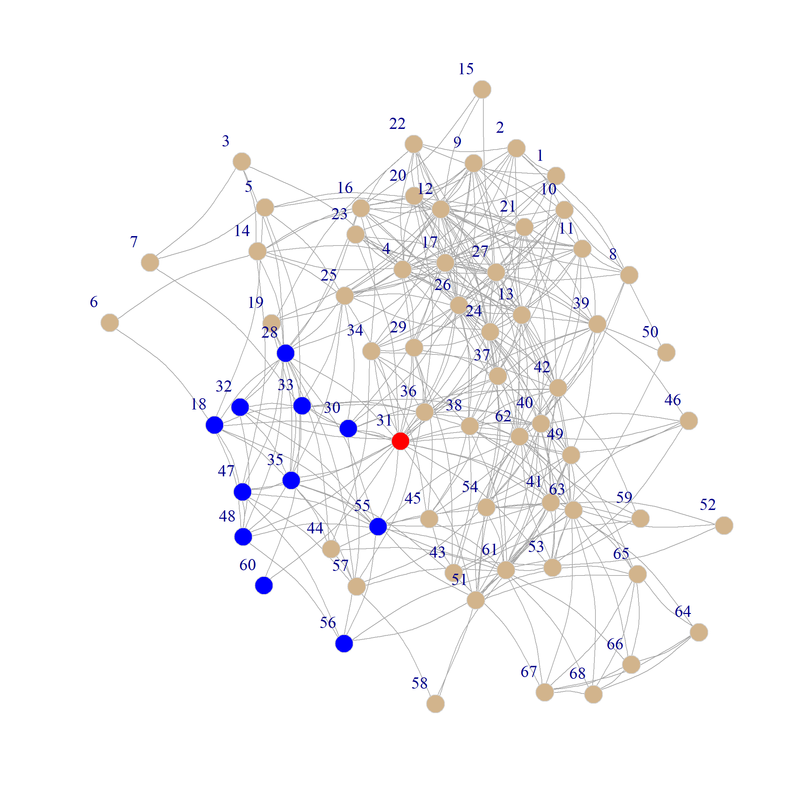

Finding Overlapping Communities by Optimizing Local Fitness Functions
Lancichinetti et al. (2009) describe a method for detecting overlapping communities in networks by maximizing a local quantity at the level of subgraphs of the larger graph. Let’s see how this works. First, let’s load up the friendship nomination network from Lazega (2001), constrained to be undirected:
1 The Local Fitness Function
Lancichinetti et al. (2009) propose that we optimize the following function at the subgraph level:
\[ f(G') = \frac{k^{in}}{k^{in} + k^{out}} \tag{1}\]
Where \(k^{in}\) is the internal degree of nodes in the subgraph (the sum of the degrees of each node in the subgraph, counting only intra-community neighbors) and \(k^{out}\) is the external degree (the sum of the degrees of each node in the subgraph, only counting links to nodes outside the subgraph).
Here’s an R function that computes for any subgraph:
And here is the sg.fitness function in action:
Which says that the fitness of the subgraph formed by nodes 61, 62, 65, and 67 is 0.13.
2 Relative Node Fitness
Lancichinetti et al. (2009) define the fitness of a node \(v\) relative to a given subgraph \(G'\) as the difference in the subgraph’s fitness with that node included versus the subgraph’s fitness with that node excluded:
\[ f^v_{G'} = f^v_{G' + v} - f^v_{G' - v} \tag{2}\]
We can write a function to determine the fitness of a node relative to a subgraph according to using our previous sg.fitness function like this:
So if we wanted to figure out the fitness of node 58 relative to the subgraph formed by nodes 61, 62, 65, and 67 we can just type:
We can see that node 58’s fitness relative to this subgraph is positive, indicating that including it increases the subgraph’s fitness.
3 The Natural Community of Each Node
Lancichinetti et al. (2009) describe an algorithm to determine what they call the “natural community” of a given node. The idea is to start with that node as its own subgraph, add the neighbor with the highest fitness relative to the starting subgraph, and continue adding subgraph neighbors with the highest fitness relative to the growing subgraph until the remaining subgraph neighbors have a node fitness less than \(\epsilon\) where \(\epsilon\) is a small number (e.g., \(\epsilon = 0.01\)). The final subgraph thus constructed is the seed neighbor’s “natural community.”
How do we do that? First, let’s write a function that takes a list of nodes specifying a subgraph of a larger graph as input and returns all unique neighbors of those nodes as output.
So, for instance, if we wanted to see all the neighbors of the earlier subgraph, we would type:
[1] 40 51 53 63 64 66 68 43 38 41 42 44 45 49 50 54 55 56 57 58 59 4 8 11 13
[26] 24 26 27 31 36 46Great. Now that we have this, all we need to do is loop through each of the focal node’s neighbors, figure out which one increases the fitness of the subgraph composed of the union of the original node and that neighbor the most, and keep adding neighbors (and neighbors of neighbors), until the remaining nodes don’t add much to the fitness.
Here’s a function that does that:
Code
node.comm <- function(graph, node, s = 123456, e = 0.01) {
fit.vec <- 1 # initializing node fitness vector
sub <- node # initializing subgraph
set.seed(s) # setting seed
while (sum(fit.vec <= e) != length(fit.vec)) {
nei <- sub.nei(graph, sub)
fit.vec <- sapply(nei, function(x) {
node.fit(graph, sub, x)
})
names(fit.vec) <- nei
max.fit <- names(which(fit.vec == max(fit.vec)))
if (length(max.fit) > 1) {
max.fit <- sample(max.fit, 1)
}
sub <- unique(c(sub, max.fit))
sub.fit.vec <- sapply(sub, function(x) {
node.fit(graph, sub, x)
})
low.fit <- names(which(sub.fit.vec < 0))
if (length(low.fit) != 0) {
sub <- sub[!sub %in% low.fit]
}
}
sub <- sub[!sub %in% node]
return(sub)
}And here are the nodes that belong to node 31’s natural community:
We can see from that indeed this set of nodes (pictured in blue) belongs to a cohesive subgroup proximate to node 31 (pictured in red).
4 An Algorithm to Detect Overlapping Communities
To build overlapping communities, Lancichinetti et al. (2009) recommend that we pick a node at random, compute its natural community, then pick another node at random that is not yet assigned to a community, and repeat until each node has been assigned to at least one community. In R, we can do that by gradually building a list object that contains the nodes assigned to a randomly chosen node’s “natural community” as determined by the node.comm function above across the various iterations. Here’s a function that does that:
Code
fit.comm <- function(graph, s = 123) {
node.list <- V(graph)$name # initial node list
comm.list <- list() # initializing the overlapping communities list
set.seed(s) # setting the seed
k <- 1
while (length(node.list) != 0) {
v <- sample(node.list, 1) # randomly selecting a node from the list
nc <- node.comm(graph, v) # determining the natural community of the node
comm.list[[k]] <- c(nc, v) # adding nodes to the list
node.list <- node.list[!node.list %in% unique(c(unlist(comm.list)))] # deleting the nodes already assigned to a community from the list
k <- k + 1
}
return(comm.list)
}And here’s the function in action:
[[1]]
[1] "60" "33" "32" "35" "28" "48" "18" "47" "55" "56" "30" "31"
[[2]]
[1] "56" "55" "48" "47" "18" "35" "28" "32" "6" "14" "51"
[[3]]
[1] "58" "57" "44" "19" "35" "47" "54"
[[4]]
[1] "59" "43" "54" "41" "51" "49" "61" "53" "55" "46" "40" "63" "65" "52" "67"
[16] "68" "66" "64" "58" "62"
[[5]]
[1] "8" "10" "12" "9" "21" "27" "17" "20" "13" "24" "4" "23" "22" "2" "1"
[16] "26" "25" "16" "29" "37" "39" "15" "14" "11"
[[6]]
[1] "7" "5" "33" "3"
[[7]]
[1] "59" "54" "61" "58" "57" "44" "19" "50" "35" "42"
[[8]]
[1] "43" "29" "34" "38" "42" "59" "36" "39" "26" "37" "41" "40" "46" "62" "54"
[16] "61" "49" "53" "51" "31" "63" "24" "55" "52" "65" "13" "45"We can see that the algorithm returns a list object containing 8 communities.
We can now create the bi-adjacency matrix corresponding to the two-mode person by community network, as we did in the case of the clique percolation method for overlapping community detection:


Here are the entries for the first 10 people:
[,1] [,2] [,3] [,4] [,5] [,6] [,7] [,8]
[1,] 0 0 0 0 1 0 0 0
[2,] 0 0 0 0 1 0 0 0
[3,] 0 0 0 0 0 1 0 0
[4,] 0 0 0 0 1 0 0 0
[5,] 0 0 0 0 0 1 0 0
[6,] 0 1 0 0 0 0 0 0
[7,] 0 0 0 0 0 1 0 0
[8,] 0 0 0 0 1 0 0 0
[9,] 0 0 0 0 1 0 0 0
[10,] 0 0 0 0 1 0 0 0And here’s the community overlap matrix:
[,1] [,2] [,3] [,4] [,5] [,6] [,7] [,8]
[1,] 12 8 2 1 0 1 1 2
[2,] 8 11 2 2 1 0 1 2
[3,] 2 2 7 2 0 0 6 1
[4,] 1 2 2 20 0 0 4 15
[5,] 0 1 0 0 24 0 0 6
[6,] 1 0 0 0 0 4 0 0
[7,] 1 1 6 4 0 0 10 4
[8,] 2 2 1 15 6 0 4 27And now we can use fancy igraph pie-chart plotting to visualize the overlapping communities. This is shown in
We can se that community 5 (in blue) is the second largest community with little overlap with other communities (except 8). Community 8 (in gray) is the largest but has high levels of overlap with others. Community 6 (in dark orange) is a small self-contained community.